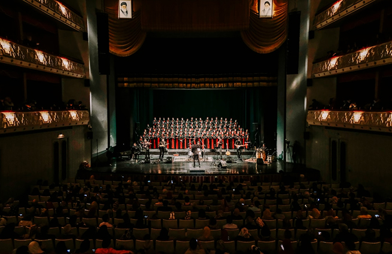
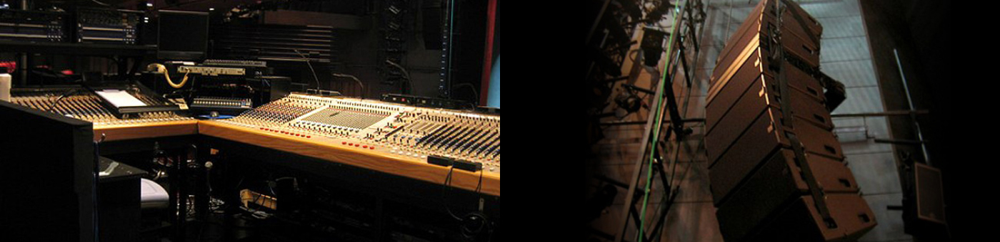
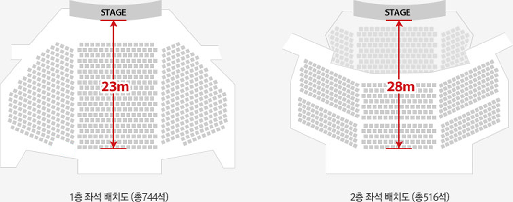

샤롯데씨어터
샤롯데씨어터
HOME > 회사소개 > 이용안내
이용 안내Visitor Information
시설 스펙부터 대관 절차까지, 샤롯데씨어터의 모든 것을 한곳에서 확인하세요.
시설 안내
STAGE SYSTEM공연의 규모에 맞춰 자유롭게 변주되는 무대
400 kg · 1.7m/s- 01STAGE RIGGING SYSTEM
- 샤롯데씨어터는 국내 공연장 중 가장 많은 수의 배턴(Batten)을 보유하고 있습니다. 또,
국내 최초로 미국 PRG사의 Slimline Rigging System을 채택함으로써, 전동 구동 방
식과 수동 구동 방식 중 선택이 가능하며 최대 400kg 중량의 무대 장치를 초당 1.7m의
속도로 구현할 수 있습니다.
- 02STAGE DECK SYSTEM
-
오케스트라 피트, 승강 무대, 회전 무대,특수 무대 등을 자유자재로 사용할 수 있는 미국
PRG사의 Stage Deck System을 보유하고 있습니다.- 보유 배튼 수국내 최다
- 구동 방식전동/수동 선택

SOUND SYSTEM다이내믹하고 파워풀한 사운드로 완성되는 몰입감
영국 CADAC사의 J-Type 아날로그 콘솔을 뮤지컬 전용 콘솔로 사용하며, 공연장 전역에
고르게 퍼지는 입체적인 사운드를 구현합니다.

- 54
뮤지컬 전용 인풋 채널 콘솔
CADAC J-Type 아날로그 콘솔 - KUDO
자유로운 음향 디자인인 가능한
메인 LR 스피커 · L-Acoustics - M1D
센터 스피커 · Meyersound
LIGHTING SYSTEM빛의 예술을 보여주다!
최첨단 Lighting System
최첨단 Lighting Console(MA Lighting社)과 안정성이 뛰어난 Dimmer System, 백업 시스템을 갖
춰 공연의 기능적 완성도를 최우선으로 설계했습니다. 무대 전역 어디서든 간편하게 사용할 수 있는 이
동형 Cable Reel System도 함께 갖췄습니다.
AUDITORIUM손에 잡힐 듯 생생하게 전달되는 무대의 열기,
무대와 객석 간격이 국내 최단 거리
- 28m
1층 최후열까지 - 23m
2층 최후열까지
총 1,260석(1층 744석, 2층 516석) 규모로, 무대에서 1층 최후열까지 단 23m, 2층 최후
열까지 28m - 어느 자리에서도 무대의 생생함을 그대로 느낄 수 있습니다.

대관 안내
- edit_square 01 대관 접수
- chat 02 대관 심의
- search 03 결과 발표
- select_check_box 04 대관 계약
- STEP 1 · 대관 접수
- 제출 서류대관 신청서, 공연 소개서, 공연 관련 이밎, 영상 등의 각종 첨부 자료(대관 접수 시 첨부)
- 제출 방법필요 자료 구비 후 온라인 접수
info대관 접수 전 반드시 공지사항 내 [대관공고]를 확인하시기 바랍니다.
- STEP 2 · 대관 심의
- 심의 방식공연 장르별 외부 전문가와 극장 운영진으로 구성된 대관심의위원회에서 제출 자료를 심사
- 심의 기준작품성, 공연 안전성, 극장 시설 및 운영 일정과의 적합성 등을 종합 평가
- 심의 기간접수 마감일로부터 영업일 기준 약 10일 소요
- STEP 3 · 결과 발표
- 발표 방법심의 완료 후 신청 시 등록한 연락처로 개별 통보
- 발표 시기심의 종료 후 3영업일 이내
- STEP 4 · 대관 계약
- 문의[고객센터] - [1:1문의] 또는 별도 문의(대관 공고 연락처)